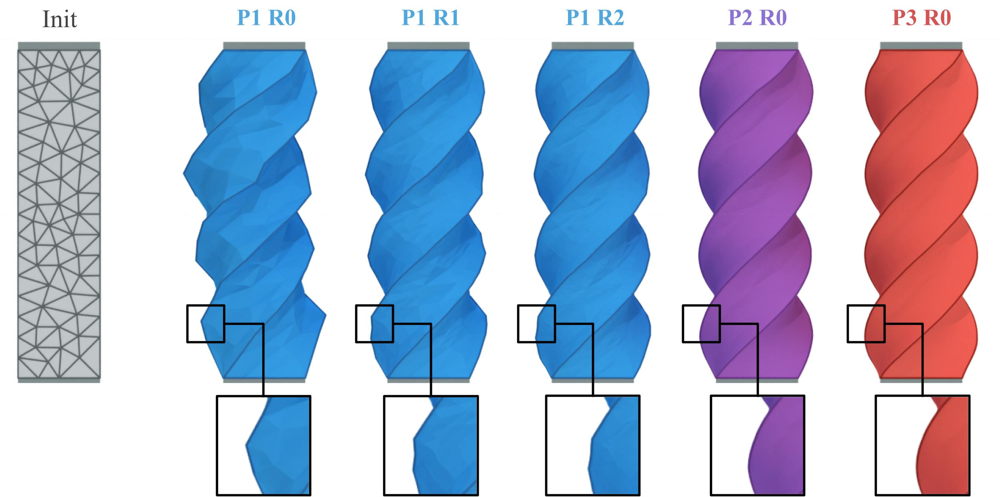
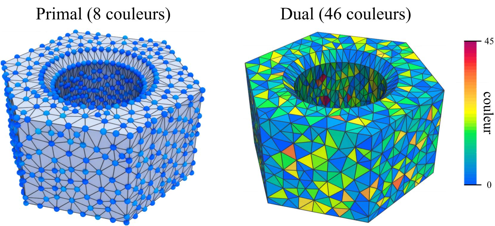
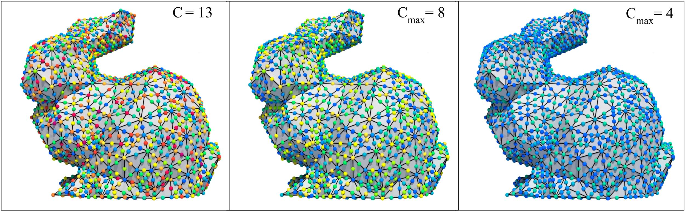
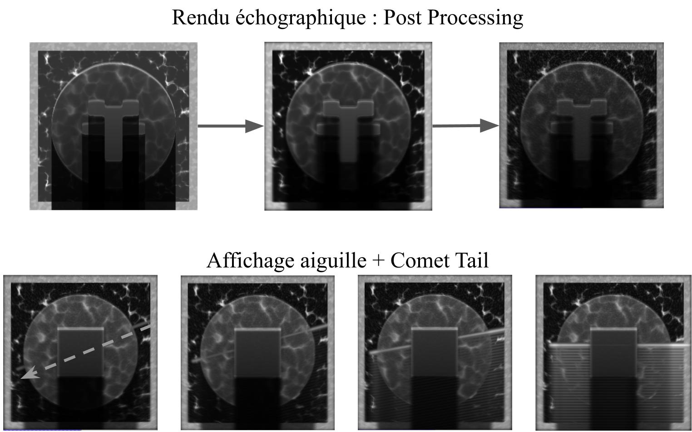
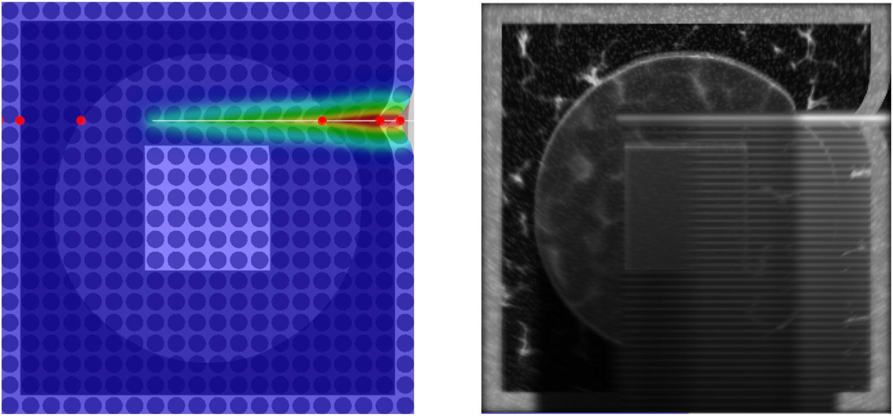
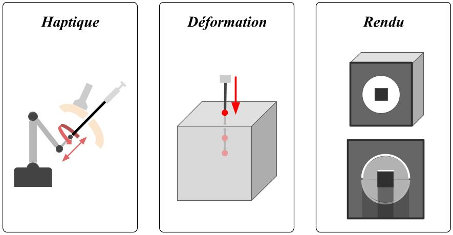
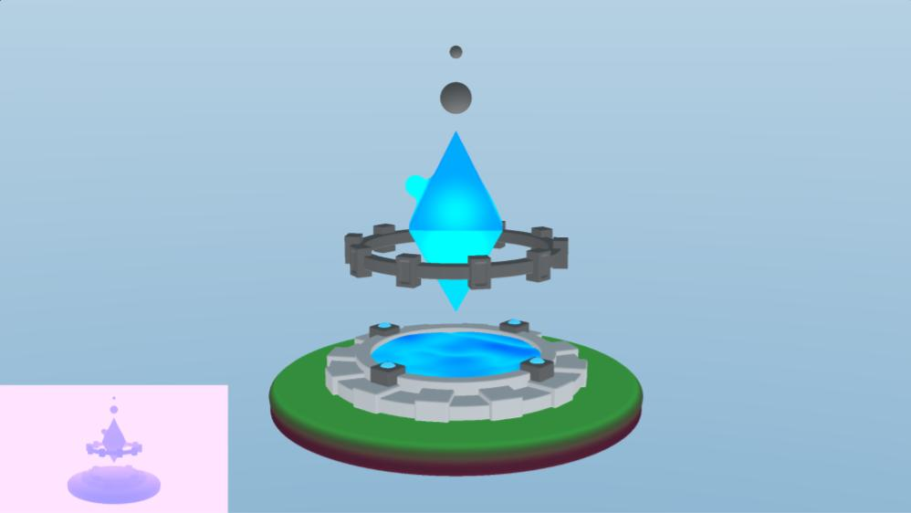
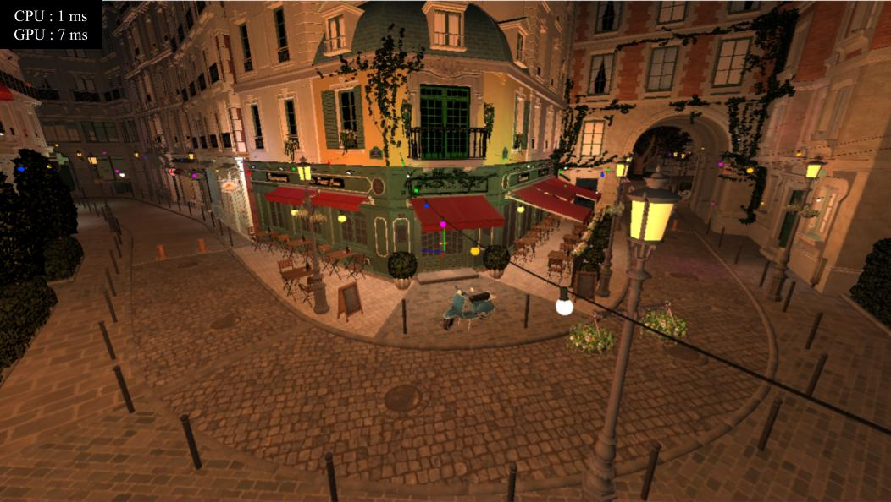
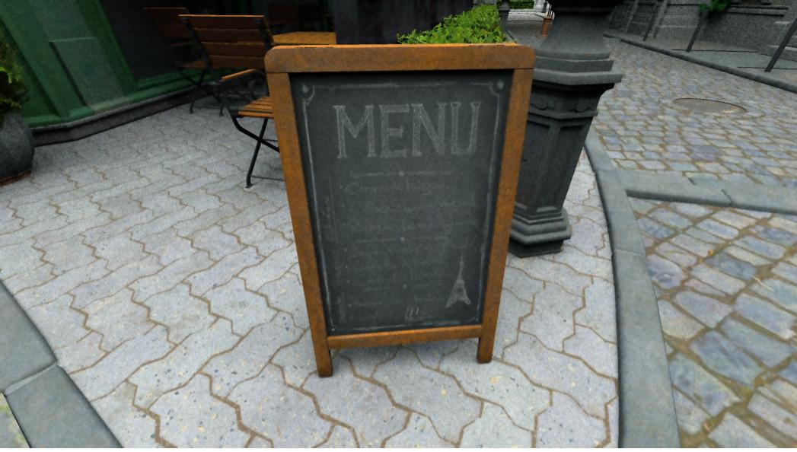
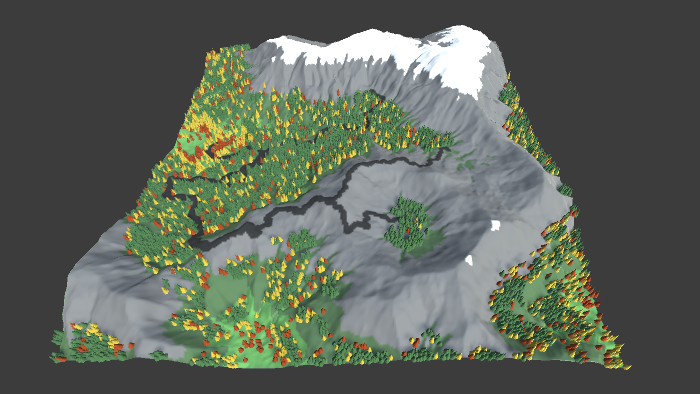

Docteur en Informatique Graphique & Simulation en Temps Réel
Sujet : Simulation temps réel d’objets déformables.
R&D : Développement d'une application pour la visualisation et la simulation d'objets déformables.
Défis techniques : Optimisation sur GPU de solveurs locaux pour des éléments finis quelconques (XPBD et VBD).
Impact & Performances : Accélération permettant une simulation robuste, stable à hautes fréquences.
Publications internationales avec comité de relecture :
- High-Order in Position Based Dynamics - CGI 2024
- Going Further With Vertex Block Descent - CASA 2025



Organisation et animation hebdomadaire du Groupe De Lecture (GDL) au sein de l'équipe de recherche ORIGAMI.
Rôle : Coordination des sessions où un chercheur, doctorant ou stagiaire partage une publication ou une technologie de son choix.
Contributions : Animation de 12 présentations (Simulation, Rendu, ShaderToy, etc.).
Activités Complémentaires d'Enseignement (ACE) réalisées en parallèle de la thèse (volume horaire total de 192 heures).
Public visé : Étudiants de la Licence 1 au Master 2.
Sujets enseignés : Algorithmique, Structures de données, C++, bases de l'informatique graphique (rendu 3D, simulation physique, analyse d'images, etc.).
Sujet : Développement et restructuration de l'architecture d'un simulateur médical destiné à la formation d'apprenants en rhumatologie (insertion d'aiguille sous échographie).
Ce travail a été présenté lors des Journées Françaises de l'Informatique Graphique (JFIG 2022).



Sujet : Exploration de l'architecture MEAN (MongoDB, Express, AngularJS et Node.js) afin de moderniser et simplifier la création des futures applications pour les clients de l'entreprise.
Production : Deux applications web full-stack ont été développées permettant respectivement de communiquer avec un système ERP et une Gestion Électronique des Documents (GED) avec gestion des niveaux d'accréditation.
Laboratoire : LIRIS (UMR 5205), Équipe Origami.
École Doctorale : ED InfoMaths (ED 512), INSA Lyon.
Direction : Guillaume Damiand, Florence Zara, Fabrice Jaillet.
Spécialisation ID3D : forme aux technologies de l'informatique graphique.
Projets notables : Simulation de tissus en C++ via DLL sur Unity3D.




Projets notables : Jeux multijoueurs locales combat d'arène / Party Game (Unity3D).
Projets notables : Jeu de plateforme narratif (Unity3D).